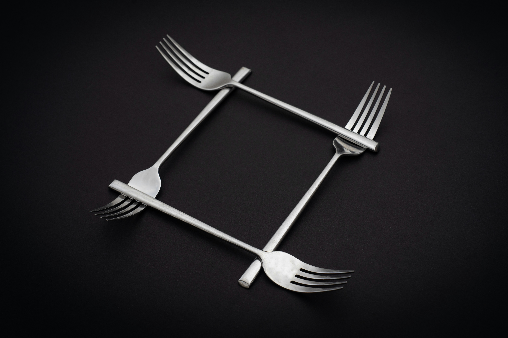
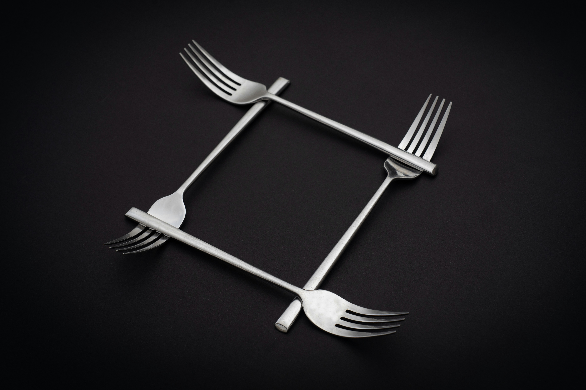

세상에서 가장 오래 기억되는 경험은 언제나 음식에서 비롯됩니다. 단순히 배를 채우는 행위를 넘어, 식탁은 사람과 사람을 연결하고, 문화와 문화를 이어주는 매개체가 되어왔습니다. VFB(베리티F&B)가 존재하는 이유도 바로 여기에 있습니다. 우리는 음식을 통해 일상의 즐거움을 확장하고, 새로운 라이프스타일을 제안하며, 지속 가능한 미래를 함께 만들어가고자 합니다.
VFB가 바라보는 식탁은 하나의 공간을 넘어선 무대입니다. 한 그릇의 따뜻한 국물, 나눔 속에서 오가는 웃음, 그리고 브랜드가 담아내는 철학이 어우러져 하나의 온전한 경험을 완성합니다. 우리의 첫 번째 브랜드인 라오충칭훠궈는 이러한 철학의 출발점이자 상징입니다. 정통 충칭 마라의 깊은 맛을 재현하면서도, 한국 소비자에게 맞는 섬세한 경험을 제공하는 과정 속에 VFB의 가치가 녹아 있습니다.
 

하지만 VFB의 시선은 한 매장, 한 브랜드에 머물지 않습니다. 우리는 F&B 그룹으로서 새로운 브랜드를 발굴하고, 식문화의 확장성을 실험하며, 고객이 예상치 못한 즐거움을 선물하는 것을 목표로 합니다. 훠궈 다음에는 어떤 식탁을 준비할 수 있을까요? 그것은 아시아의 다른 음식일 수도 있고, 디지털 기술과 결합된 푸드테크 경험일 수도 있습니다. 중요한 것은, 우리가 만드는 모든 브랜드가 정직한 재료와 진정성 있는 서비스라는 공통된 철학을 공유한다는 점입니다.
또한 VFB는 외식 산업이 지닌 사회적 책임에도 주목합니다. 지역 농산물의 가치를 존중하고, 환경을 고려한 지속 가능한 공급망을 고민하며, 직원 한 사람 한 사람의 성장을 기업의 성장과 연결하는 구조를 만들고자 합니다. 우리는 음식이라는 작은 경험을 통해 사회적 가치를 확산할 수 있다고 믿습니다.


VFB가 그리고 있는 미래는 단순히 “맛있는 음식점”의 확장이 아닙니다. 그것은 음식이 중심이 되는 문화 플랫폼의 구축입니다. 브랜드 하나하나가 작은 씨앗처럼 뿌리내려, 고객의 삶 속에서 특별한 순간을 함께하는 나무로 자라나기를 바랍니다.
우리가 지향하는 길은 멀지만, 방향은 명확합니다. Food & Beyond. 그것이 바로 VFB가 존재하는 이유이며, 앞으로도 변함없이 이어갈 비전입니다.